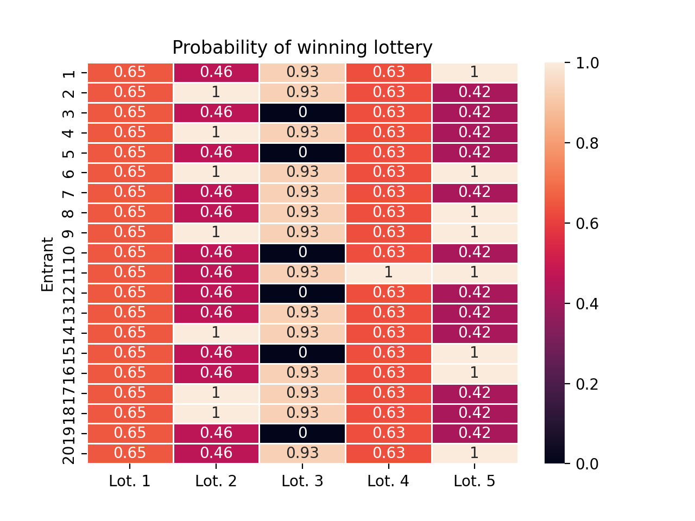
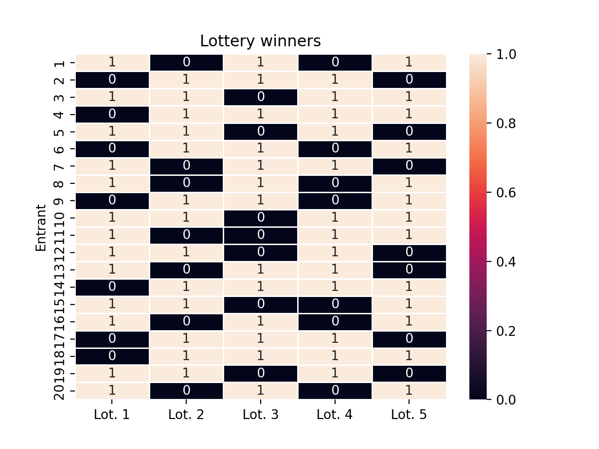
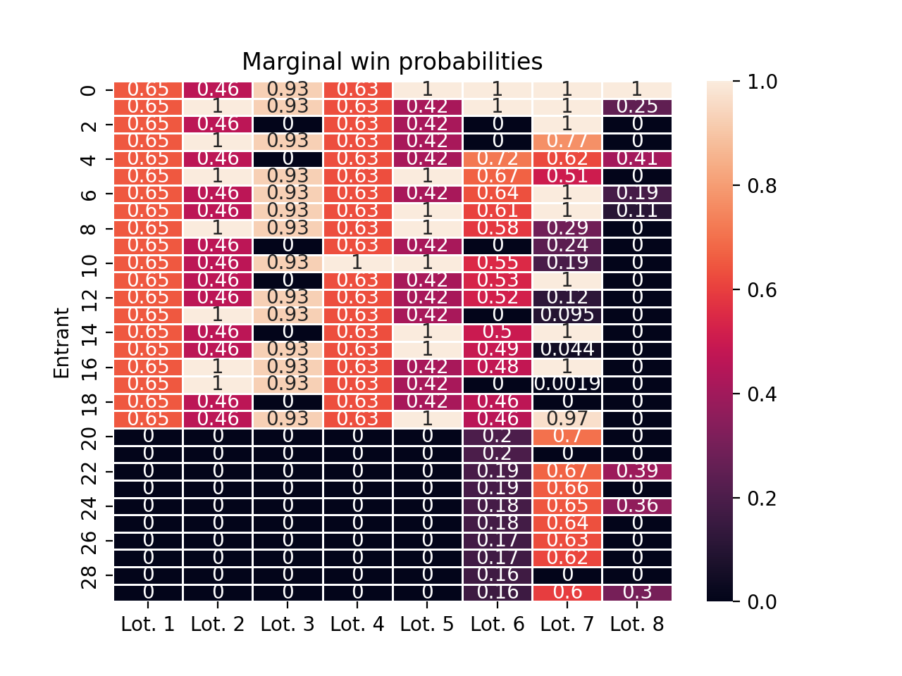
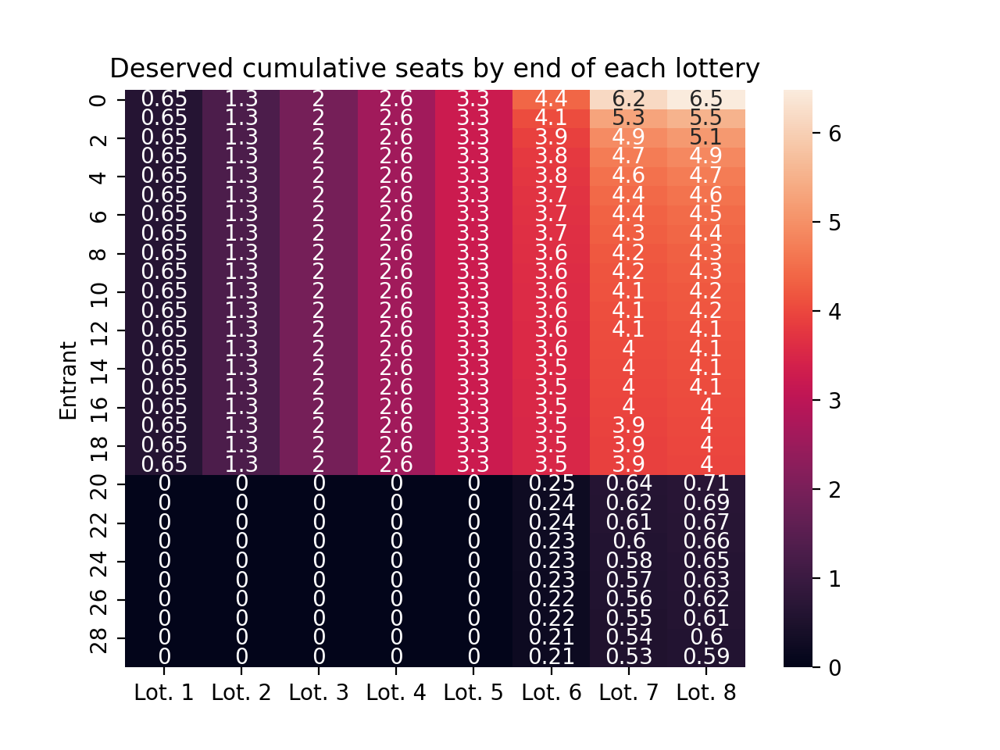
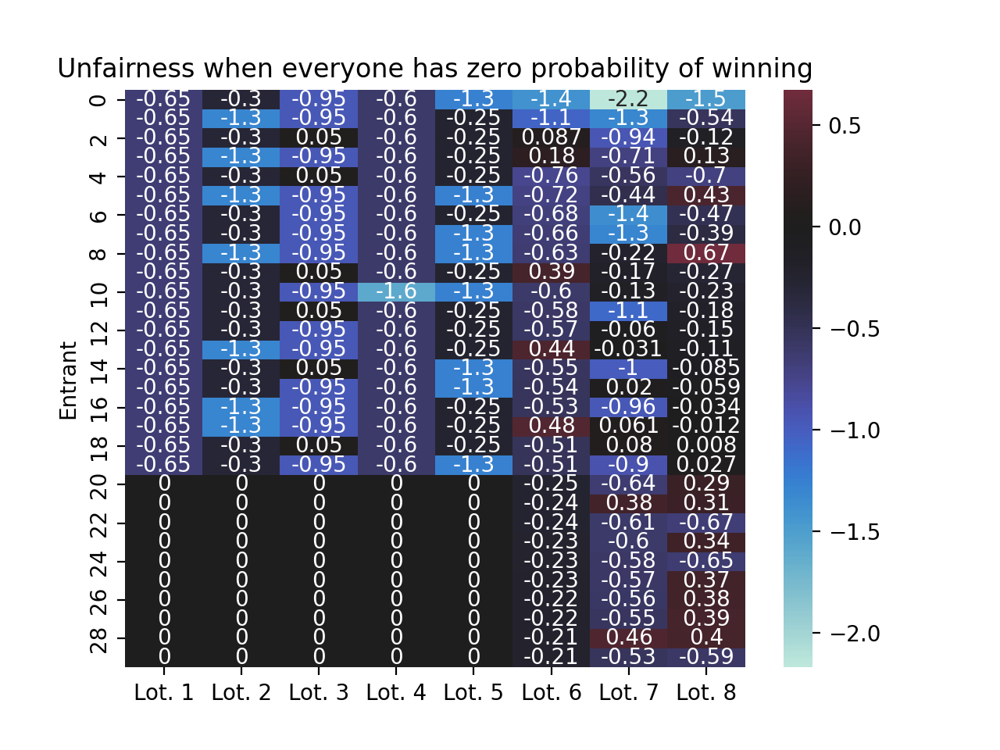
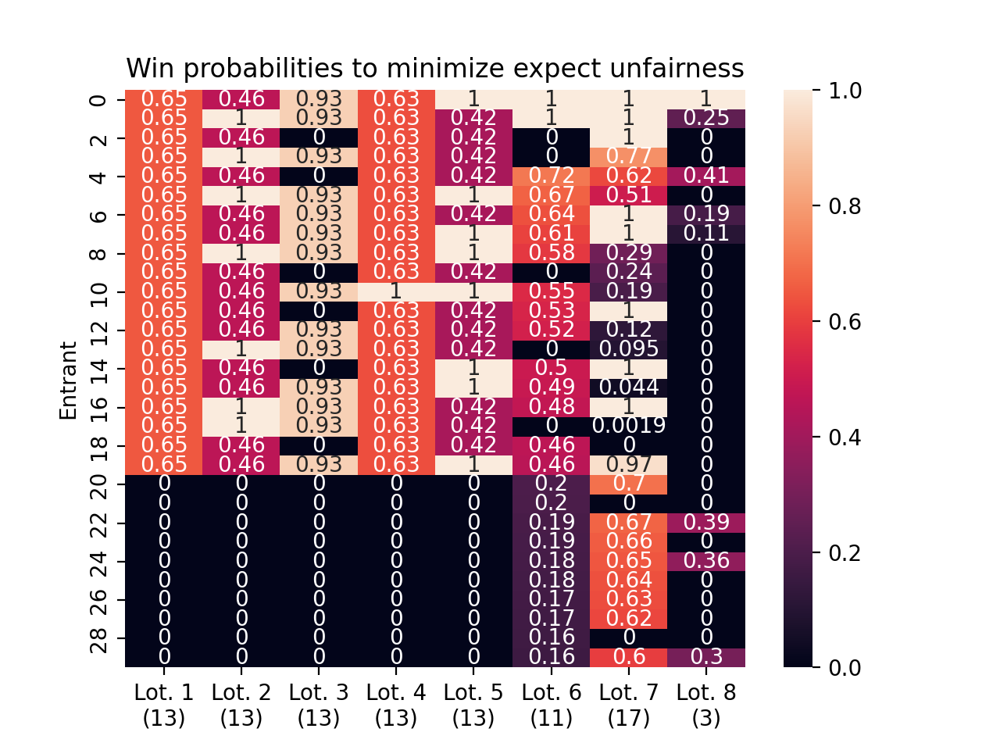
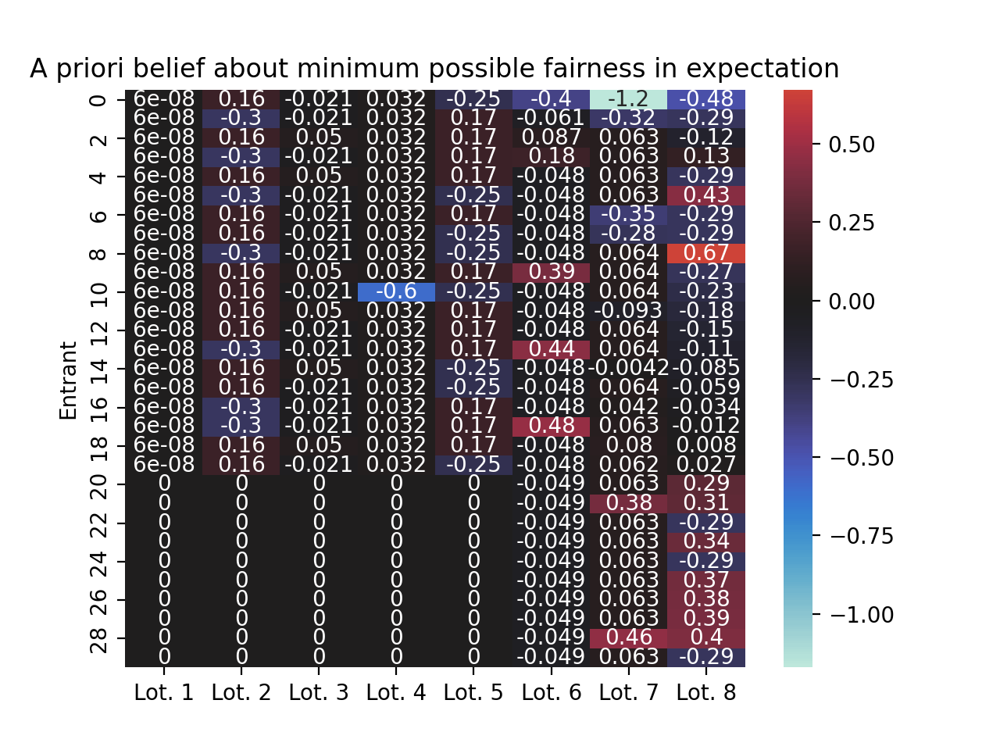
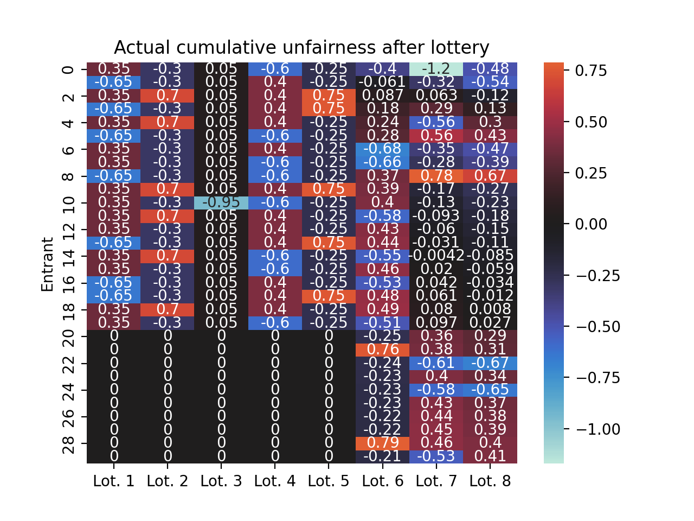

Lotteries are a reasonably fair way to allocate scarce resources. One interesting feature of lotteries, however, is that they can quickly become unfair when they happen on a repeated basis.
For instance, suppose we repeatedly run a lottery with one hundred entrants and seven winners per lottery. If we run the lottery thirty times and count how often each of the hundred entrants won, we can immediately see that some entrants win the lottery a bunch and some don’t win it all.
There are three entrants who won six times, but over ten entrants who have never won at all! This system no longer allocates each entrant a similar amount of wins.
Repeated lotteries come up in a number of places, but most intriguingly for recurring events like the New York Marathon or Burning Man, where there are attendance limits. When the number of entrants is a small multiple of the number of possible winners, outcomes from repeated lotteries are unfair1.
Formalizing fairness in repeated lotteries
A while back I started wondering about ways to run repeated lotteries in a fair way, and eventually I reached out to Bailey Flanigan, a computer scientist working on fair allocation problems in civic contexts. Less than day after receiving my email, Bailey sent me several pages of detailed notes on the problem, and suggested a way to formalize fairness in repeated lotteries2. Using her formalization, I sketched out some demo code that runs repeated lotteries in a fair way.
Suppose there is universe \(U\) of possible entrants indexed by \(i = 1, 2, 3, ...\), and we run repeated lotteries indexed by \(t = 1, ..., T\). For each lottery \(t\), there are \(N_t\) entrants and \(K_t\) prizes, or possible winners. In each lottery, we assume each applicant has a score \(s_i^t\), which is typically just a binary indicator of whether or not they applied. But you can also run weighted lotteries by allowing \(s_i^t\) to be arbitrary positive numbers, so that applicants with higher scores are more likely to selected.
For instance, in the New York Marathon, we could score entrants according to their past marathon performance to ensure that a number of world-class athletes end up admitted to the event. If entrant \(i\) has a score of \(s_i^t = 6\) and entrant \(j\) has a score of \(s_j^t = 2\), then entrant \(i\) is \(s_i^t / s_j^t = 6 / 2 = 3\) times more likely to win than entrant \(j\)3.
To encode fairness, the idea we allocate each lottery entrant a certain portion of the overall winners in each lottery. When everyone has the same score, everyone is allocated the same portion of the winnings. We then randomly select winners proportional to their allocated fair portion of the winners. That is, for the \(t^{th}\) lottery, we think that entrant \(i\) should be probabilistically allocated \[
\underbrace{\frac{s_i^t}{\sum_{i \in U} s_i^t}}_\text{fair portion of seats} \cdot \underbrace{K_t}_\text{number of winners},
\] seats, and after the \(t^{th}\) lottery runs we know the winners of the lottery \(w_i^t \in \{0, 1\}\) and we can calculate after the fact individual deviations from fairness as \[
u_i^t = \underbrace{\frac{s_i^t}{\sum_{i \in U} s_i^t}}_\text{fair portion of seats} \cdot \underbrace{K_t}_\text{available seats} - \underbrace{w_i^t}_\text{seat received}
\] The idea is that we look at how many the portion of a winner seat that entrant \(i\) was entitled to, and we can compare it with \(w_i^t\), which tells us if they actually got the seat. This lets us characterize the fairness level after the fact. To actually run a lottery, we suppose that we have seen results from the first \(T-1\) lotteries, we have all entrant scores for the \(T^{th}\) lottery, and we want to design marginal win probabilities \(\pi_i^T = \mathbb E(w_i^t = 1)\) to minimize \[
\underbrace{\sum_{i \in U}}_\text{entrants} \,
\left[
\underbrace{\frac{s_i^T}{\sum_{i \in U} s_i^T} \cdot K_T - \underbrace{\pi_i^T}_\text{win probability}}_\text{expected upcoming unfairness} +
\underbrace{\sum_{t = 1}^{T-1} u_i^t}_\text{unfairness until $T-1$}
\right]^2,
\] subject to the constraint that \(0 \le \pi_i^T \le 1\) and \(\sum_{i \in U} \pi_i^T = K_T\). To find \(\pi_i^T\), we use projected gradient descent.
Squaring the individual deviations from fair allocation turns out to be very important. Originally, I was trying to select \(\pi_i^T\) to make sure that the worst case scenario was as least harmful as possible using an \(\ell_\infty\) rather than an \(\ell_2\) unfairness penalty. Roughly speaking, the \(\ell_\infty\) unfairness metric encourages \(\pi_i^T\) to all be roughly proportional to scores \(s_i^t\), except for the entrant who is worst off, who gets a boost. And this leads to undesirable behavior, where the person who is worst off gets a boost, but so do several of the people who are moderately well off. This feels bad! Instead, we want to boost the person who is worst off first, until they are tied with the person who is second worst off, and then boost them together, and then so on and so forth. The \(\ell_2\) fairness metric, combined with the restriction that \(0 < \pi_i^T\), does exactly this. The only time that someone who has received more than their fair share of winning seats will be allocated more win probability is when everyone worse off to them has caught up, or when everyone worse off than them has already been guaranteed a win (i.e., \(\pi_i^T = 1\)).
Warning
In practice, you will likely want to enforce that \(\frac{s_i^T}{\sum_{i \in U} s_i^t} < \frac{1}{K_t}\), because otherwise the scores imply that node \(i\) should be allocated more than one winning seat. From a pragmatic perspective, all the code still runs fine, but this can have surprise impacts on cumulative unfairness over time, because entrant \(i\) can win the lottery and the system will still say they haven’t earned all the winning seats they are entitled to in future lotteries.
Components of a system to run fair lotteries
I used this project as an excuse to teach myself enough Jax to write out the fairness objective4, and will then hand the optimization problem off to Jax.
import jax.numpy as jnpdef unfairness_weighted(current_win_probability, lottery_sizes, scores, received):""" Let |U| denote the size of entrant candidate pool and t denote the index of the current lottery. In practice you might want to validate inputs by checking that ``current_win_probability`` has values in [0, 1] and sums to the current lottery size, but this seemed to involve more Jax shenanigans than I had time for when I originally this code, see https://jax.readthedocs.io/en/latest/debugging/checkify_guide.html Inputs: - current_win_probability: (|U|)-Array corresponding to pi^t - lottery_sizes: (t)-Array corresponding to K^1, ..., K^t - scores: (|U|, t)-Array containing values of s_i^t - received: (|U|)-Array containing the number wins so far for each entrant Output: - (1)-Array scalar loss """ scores_normed = scores / scores.sum(axis =0) allocation = (scores_normed * lottery_sizes).sum(axis=1) individual_deviations = received + current_win_probability - allocation loss = jnp.linalg.norm(individual_deviations)return loss
To perform the projected gradient descent, we also need a projection operator that takes an arbitrary \(\pi \in \mathbb R^{N_t}\) and projects it onto the intersection of the simplex summing to \(K_t\) and \([0, 1]^{|U|}\).
def projection_simplex_clip(r, simplex_sum=1):""" Projects a real-valued vector ``r`` onto the simplex, with the constraint the elements of the simplex sum to ``simplex_sum``, and all entries of the vector must be between 0 and 1. Modified from http://www.ryanhmckenna.com/2019/10/projecting-onto-probability-simplex.html """ lambdas = jnp.append(-r, 1- r) idx = jnp.argsort(lambdas) lambdas = lambdas[idx] active = jnp.cumsum((idx < r.size) *2-1)[:-1] diffs = jnp.diff(lambdas, n=1) totals = jnp.cumsum(active * diffs) i = jnp.searchsorted(totals, simplex_sum) lam = (simplex_sum - totals[i]) / active[i] + lambdas[i +1] p = jnp.clip(r + lam, 0, 1)return p / p.sum() * simplex_sum # re-normalization not strictly necessary
At this point there it seems like we just need some scores and a way to perform the actually sampling and we’re all done. But sampling according to \(\pi^t\) is not as immediate as you might hope:
If you flip a coin with probability \(\pi_i^t\) for \(i \in U\), and the coin flips are all independent, there is no way to guarantee that you respect capacity constraints and have exactly \(K_t\) winners.
If you perform weighted random sampling with replacement, you might select the same entrant several times.
If you perform weighted random sampling without replacement, for many sampling algorithms the weights are not the marginal selection probabilities, and in fact it may even be computationally infeasible to compute the marginal selection probabilities given the weights.
It turns out the relevant tool here is “randomized rounding,” which enables us to sampling without replacement according to marginal probabilities of selection. I cannot describe this literature as particularly approachable to those outside the discrete optimization community. In any case, there’s a method called randomized pipage rounding that does what we need (see the Appendix of Karimi et al. 2017 and reference trail therein).
def randomized_pipage_rounding(x):""" Fast pipage rounding implementation for uniform matroid From https://github.com/bwilder0/clusternet with trivial modification See Randomized Pipage Rounding algorithm in http://arxiv.org/abs/1711.01566 """ i =0 j =1 x = np.array(x)for _ inrange(len(x) -1):if x[i] ==0and x[j] ==0: i =max((i, j)) +1elif x[i] + x[j] <1:if rng.random() < x[i] / (x[i] + x[j]): x[i] = x[i] + x[j] x[j] =0 j =max((i, j)) +1else: x[j] = x[i] + x[j] x[i] =0 i =max((i, j)) +1else:if rng.random() < (1- x[j]) / (2- x[i] - x[j]): x[j] = x[i] + x[j] -1 x[i] =1 i =max((i, j)) +1else: x[i] = x[i] + x[j] -1 x[j] =1 j =max((i, j)) +1# round one last time to make result look cleanreturn np.round(x)
I was quite surprised at how hard it was to find the implementation above, and also by how little use randomized rounding seems to get within statistics proper. In any case, we can briefly check that the sampler is working as desired.
pi_test = np.array([0.1, 0.3, 0.4, 0.8, 0.4]) # sums to 2.0reps =5000total = np.zeros_like(pi_test)for i inrange(reps): total += randomized_pipage_rounding(pi_test)# deviations from marginal selection probabilities are smalltotal / reps - pi_test
array([ 0. , -0.0034, 0.006 , -0.0102, 0.0076])
A proof-of-concept system to run fair lotteries
At this point we have all of the components we need to compute \(\pi_i^t\) for each lottery, and to then sample the lottery winners according to \(\pi_i^t\). The following LotteryPool class orchestrates this process, which is mostly record keeping.
Code
import loggingimport matplotlib.pyplot as pltimport seaborn as snsfrom jaxopt import ProjectedGradientlogger = logging.getLogger("lottery_pool_logger") logging.basicConfig(level="WARNING")class LotteryPool:""" win_probability: 2d float array of marginal win probabilities (num_entrants x num_lotteries) winners: 2d binary array of winners (num_entrants x num_lotteries) scores: 2d float array of application scores (positive values only) (num_entrants x num_lotteries) lottery_size: 1d integer vector of number of winners per lottery (num_lotteries) note that both num_entrants and num_lotteries are changing over time """def__init__(self, pool_name : str):self.pool_name = pool_name self.first_lottery =Trueself.scores =Noneself.lottery_sizes =Noneself.winners =Noneself.win_probabilities =Nonedef _add_lottery_data(self, current_scores, current_lottery_size):""" scores - 1d jax array lottery_size - 1x1 jax array """ num_entrants =len(current_scores)ifself.first_lottery:self.lottery_sizes = jnp.asarray(current_lottery_size)self.scores = current_scores.reshape(-1, 1)# repeated lotteryelse:self.lottery_sizes = jnp.append(self.lottery_sizes, current_lottery_size) num_pool_members =self.scores.shape[0]if num_entrants < num_pool_members:raiseValueError(f""" Must provide a score for each member of the pool. There are {num_pool_members} pool members, but you only provided scores for {num_entrants} entrants. """ )elif num_entrants > num_pool_members: num_new_entrants = num_entrants - num_pool_members num_lotteries =self.scores.shape[1] logger.warning(f"Since there are {num_new_entrants} new pool members, retroactively setting past scores, win probabilities and wins for these members to zero for {num_lotteries} lotteries") retroactive_scores = jnp.zeros((num_new_entrants, num_lotteries)) retroactive_winners = jnp.zeros((num_new_entrants, num_lotteries)) retroactive_win_probabilities = jnp.zeros((num_new_entrants, num_lotteries))self.scores = jnp.vstack((self.scores, retroactive_scores)) self.winners = jnp.vstack((self.winners, retroactive_winners)) self.win_probabilities = jnp.vstack((self.win_probabilities, retroactive_win_probabilities)) self.scores = jnp.hstack((self.scores, current_scores.reshape(-1, 1)))def _record_results(self, current_fair_probabilities, current_winners):ifself.first_lottery:self.win_probabilities = current_fair_probabilities.reshape(-1, 1)self.winners = current_winners.reshape(-1, 1)else:self.win_probabilities = jnp.hstack((self.win_probabilities, current_fair_probabilities.reshape(-1, 1)))self.winners = jnp.hstack((self.winners, current_winners.reshape(-1, 1))) def run_lottery(self, scores, lottery_size: int):""" scores - 1d jax array """self._add_lottery_data(scores, lottery_size) num_entrants =len(scores)if lottery_size <0:raiseValueError(f"Lottery must have positive number of winners, rather than {lottery_size} winners")elif num_entrants <= lottery_size: logger.warning(f"Everyone wins! Lottery allows {lottery_size} winners and there are only {num_entrants} entrants") current_fair_probabilities = jnp.ones_like(scores) current_winners = jnp.ones_like(scores)else:ifself.first_lottery: received = jnp.zeros_like(scores)else: received =self.winners.sum(axis=1)# jax must be able to coerce a float inf to this type, so must not be int32 apparently init_params = scores / scores.sum() pg_weighted = ProjectedGradient(fun=unfairness_weighted, projection=projection_simplex_clip) opt_results = pg_weighted.run( init_params=init_params, # passed to first arg of unfairness_weighted hyperparams_proj=lottery_size, # passed to project_simplex_clip lottery_sizes=self.lottery_sizes, # remaining are keyword args passed to unfairness_weighted scores=self.scores, received=received, ) current_fair_probabilities = opt_results.params current_winners = jnp.asarray(randomized_pipage_rounding(current_fair_probabilities))self._record_results(current_fair_probabilities, current_winners)self.first_lottery =Falsereturn current_winnersdef plot_win_probabilities(self, **kwargs):return sns.heatmap(self.win_probabilities, linewidth=0.5, **kwargs)def plot_winners(self, **kwargs):return sns.heatmap(self.winners, linewidth=0.5, **kwargs)
Example: uniform scores and fixed entrant pool
Now we test the implementation by running repeated lotteries with a fixed entrant pool where everyone has the same score, and we visualize how the marginal win probabilities change over time.
Code
demo_pool = LotteryPool("Demonstration Pool")scores = jnp.ones((20,))# run five lotteriesdemo_pool.run_lottery(scores, lottery_size=13)demo_pool.run_lottery(scores, lottery_size=13)demo_pool.run_lottery(scores, lottery_size=13)demo_pool.run_lottery(scores, lottery_size=13)demo_pool.run_lottery(scores, lottery_size=13)ax = demo_pool.plot_win_probabilities(annot=True)ax.set(ylabel="Entrant", title="Probability of winning lottery")ax.set_xticklabels([f"Lot. {i +1}"for i inrange(5)])ax.set_yticklabels([f"{i +1}"for i inrange(20)])plt.show()ax = demo_pool.plot_winners(annot=True)ax.set(ylabel="Entrant", title="Lottery winners")ax.set_xticklabels([f"Lot. {i +1}"for i inrange(5)])ax.set_yticklabels([f"{i +1}"for i inrange(20)])plt.show()


Each column of the heatmap above corresponds to a lottery, and each row responds to an entrant. In the first column, we see that every entrant has the same chance of winning the lottery. In the second lottery, everyone who lost the first lottery is guaranteed a win, and entrants who won the first lottery have a low chance of winning again. In the third lottery, entrants who have won twice already are guaranteed to lose the lottery, but everyone else gets a fairly high change of winning for a second time.
One nice feature about this system is that once you know all the lottery scores, you can transparently tell each entrant their probability of winning the lottery, before actually running the lottery.
In this case, the lottery is in essence operating as a randomized turn-based system, where you have to wait for everyone to win before moving on to the next round. So why might we want to use this lottery system if it essentially boils down to taking turns with some randomness?
Example: non-uniform scores, varying entrants and varying lottery size
Things get more complicated when the entrants to each lottery change over time, when their scores vary, and when a different number of people can win each lottery. Below, we run three more lotteries in the same pool as before, adding five new lottery entrants and changing the number of winners per lottery.
Code
scores = jnp.ones((30,))scores = jnp.array([1/ (i +1)**0.5for i inrange(30)])demo_pool.run_lottery(scores, lottery_size=11)demo_pool.run_lottery(scores, lottery_size=17)demo_pool.run_lottery(scores, lottery_size=3)ax = demo_pool.plot_win_probabilities(annot=True)ax.set(ylabel="Entrant", title="Marginal win probabilities")ax.set_xticklabels([f"Lot. {i +1}"for i inrange(demo_pool.scores.shape[1])])plt.show()

Conclusion
There are also some extensions to this idea that make it more useful in real-world scenarios, like a waitlist, or a buddy system that ensures that pairs (or groups) of people all either win together, or not at all. Buddy systems would be especially relevant in settings like over-subscribed sports leagues, where it’s most fun to play if you end up on a team with your friends.
Regardless, I would love to see some events and organizations try this out. I think this kind of idea would be most ergonomically integrated into general event hosting systems or payment systems: for instance, Eventbrite or Square could attach purchases to repeated lottery pools. I’m especially curious about this kind of system as a replacement for items that sell out very quickly. For instance, slots in the Madison Ultimate Frisbee League are often filled within a day of going on sale, creating unpleasant and stressful races to purchase the tickets in time. I would rather have a week to unhurried enter a lottery for these slots, and then at the end of the week learn if I got one. I’m not sure how the economics of this would work out for businesses, but imagining paying a small amount to enter the lottery, which is applied toward the cost of your purchase if you win. I’m also curious if this kind of system could be used to limit scalping.
Appendix: making sense of the optimization problem
To understand how the lottery system works, I found the following visualizations particularly helpful. The core idea is that scores and lottery size determine the number of seats each entrant deserves win in a given lottery. The first step is to track how these allocation portions of winner seats evolve over time. For the lotteries above, they evolve as follows.
Code
deserved_seats = ( demo_pool.scores / demo_pool.scores.sum(axis=0) * demo_pool.lottery_sizes).cumsum(axis=1)ax = sns.heatmap( deserved_seats, annot=True)ax.set(title="Deserved cumulative seats by end of each lottery", ylabel="Entrant")ax.set_xticklabels([f"Lot. {i +1}"for i inrange(demo_pool.scores.shape[1])])plt.show()

The next key idea is to track how many times each person has won already, and compare that with the seats they deserved in the past and in the current lottery. These individual deviations from fair outcomes will guide our choice of lottery probabilities for the current lottery. In the following, negative numbers indicate entrants who has received fewer winning seats than they were allocated. Positive numbers indicated entrants who have received more winner seats than they were allocated. Hopefully it’s clear that we want to start by assigning current lottery win probabilities to the folks who have received the least fair outcomes so fair.
Code
ax = sns.heatmap( demo_pool.winners.cumsum(axis=1) - demo_pool.winners - deserved_seats, annot=True, center=0)ax.set(title="Unfairness when everyone has zero probability of winning", ylabel="Entrant")ax.set_xticklabels([f"Lot. {i +1}"for i inrange(demo_pool.scores.shape[1])])plt.show()

We calculate the win probabilities that would make things most fair are as follows. I recommend comparing the figure above with the figure below fairly carefully. This pair of figures is what convinced me that I had found the right objective function.
Code
ax = sns.heatmap( demo_pool.win_probabilities, annot=True)ax.set(title="Win probabilities to minimize expect unfairness", ylabel="Entrant")ax.set_xticklabels([f"Lot. {i +1}"for i inrange(demo_pool.scores.shape[1])])plt.show()

If you add the previous two figures together, that tells you what you expect the unfairness levels to be, on average, after running the current lottery.
Code
ax = sns.heatmap( demo_pool.winners.cumsum(axis=1) - demo_pool.winners - deserved_seats + demo_pool.win_probabilities, annot=True, center=0)ax.set(title="A priori belief about minimum possible fairness in expectation", ylabel="Entrant")ax.set_xticklabels([f"Lot. {i +1}"for i inrange(demo_pool.scores.shape[1])])plt.show()

In practice, however, the lottery is random, and so the unfairness after each lottery is also random. Here’s what it looked like in our case.
Code
ax = sns.heatmap( demo_pool.winners.cumsum(axis=1) - deserved_seats, annot=True, center=0)ax.set(title="Actual cumulative unfairness after lottery", ylabel="Entrant")ax.set_xticklabels([f"Lot. {i +1}"for i inrange(demo_pool.scores.shape[1])])plt.show()

And just for giggles, we can also the number of times each entrant had won the lottery at each point in time.
Karimi, Mohammad, Mario Lucic, Hamed Hassani, and Andreas Krause. 2017. “Stochastic Submodular Maximization: The Case of Coverage Functions.” In 31st Conference on Neural Information Processing Systems.
Footnotes
In contrast, if almost no one gets into an event (or almost every does) repeated winners (or losers) are pretty rare↩︎
I strongly encourage you to read Bailey’s papers if this kind of thing is up your alley. I also want to say that it was incredibly fun to brainstorm back and forth with Bailey, and if you get the chance to work with her at all, I highly recommend it.↩︎
In practice, you probably want these scores to be a multiplicative scale for them to have any impact – i.e., if you want a certain entrant to be more likely to win, their score should be orders of magnitude higher than typical scores↩︎
Per Bailey, you can extend this objective to include demographic quotas (for instance, when you want lottery winners to be reflective of an underlying population), but then you have to solve a somewhat involved discrete optimization problem and things quickly get above my pay grade.↩︎
![]()